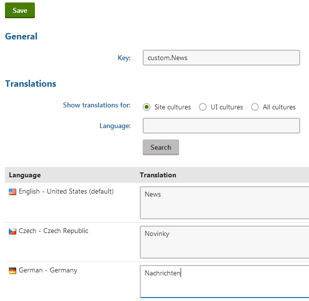

Working with resource strings
Resource strings store the text displayed in the Kentico administration interface (and on the live site in some cases).
All default resource strings are stored in the cms.resx file, which is located in the project's CMSResources folder.
You can define site specific resource string files, as described in Creating site specific resource strings.
To create resource string files for custom modules, see an example in Example - Creating a packageable module.
You can edit the resource strings that the system stores in the database in the Localization application on the Resource strings tab.
Resource string priority
When loading resource strings, the system uses the following priority:
database (Localization application) – highest priority
site specific resx files
resx files of custom modules
custom.resx
cms.resx
If there are duplicate strings with the same key in all five sources, the system uses the one stored in the database.
To change the priorities, you can add the following key to your web.config:
<add key="CMSUseSQLResourceManagerAsPrimary" value="false" />When this key is added, the priorities are as follows:
site specific resx files
resx files of custom modules
custom.resx
cms.resx
database
Modifying the default UI strings
If you want to modify text in the Kentico administration interface (including web part dialogs), use one of the following options:
Override resource strings in the Localization application.
Create a custom.resx file in the project's CMSResources folder and store your strings in this file.
The file's content must have a valid XML structure for the .resx file format, including header information. You can copy the general structure from the default cms.resx file.
To customize strings in non-English resource files, your custom file must use a name in format custom.<culture code>.resx (for example, custom.fr-fr.resx for French).
In both cases, the keys used to identify the strings must be the same as in the default cms.resx file.
Accessing the Localization application
Editing of resource strings in the Localization application is only possible for two types of users:
Users with the Global administrator privilege level
Users who belong to roles with the Localize strings permission for the Localization module
Note: The Localize strings permission allows users to edit or override all global resource strings. You cannot use the permission model to restrict access to a certain subset of resource strings, for example on Kentico instances containing multiple independent websites.
Adding your own strings
If you need to translate custom strings used on your website such as form labels, display names of objects or other static text into other languages, you can create a new resource string:
Open the Localization application.
Choose the default culture in the Culture selector.
Click New string.
Type the name of the resource string into the Key field.
Type the text for the key into the Translation field of the corresponding language.
Click Save.
A new string in the default culture is now displayed in the list.
You can also create new resource strings directly when editing text fields in the administration interface. See Localizing text fields.
Translating resource strings into other languages
Open the Localization application.
Edit (
 ) the resource string.
) the resource string.If you do not see the desired language, use the Show translation for radio buttons to change the category of cultures.
Translate the string into the desired language in the corresponding Translation field.

Translating a resource stringClick Save.
The resource string and its translation are now created and stored in the database.
Using resource strings in transformations
If you need to display resource strings within transformations, use the following code:
ASCX transformations – call the Localize transformation method:
<%# Localize("Text containing localization expressions: {$stringKey$}") %>Text / XML transformations – use localization string macro expressions or the GetResourceString macro method:
{$stringKey$}- OR -{% GetResourceString("stringKey") %}
Loading resource strings in the API
If you need to retrieve the value of a resource string in your custom code, use the CMS.Helpers.ResHelper.GetString method.
using CMS.Helpers; ...// Loads the value of the 'stringKey' resource string (in the default culture)string localizedResult = ResHelper.GetString("stringKey");